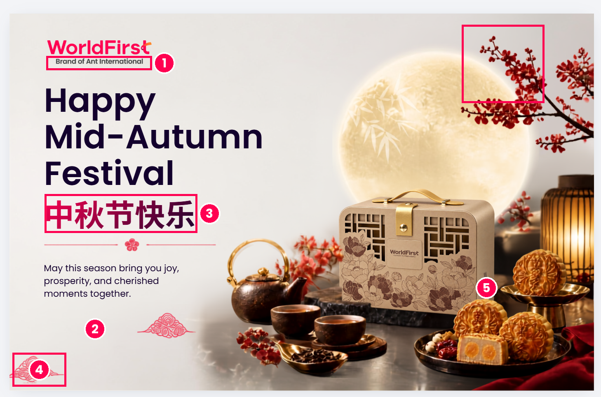
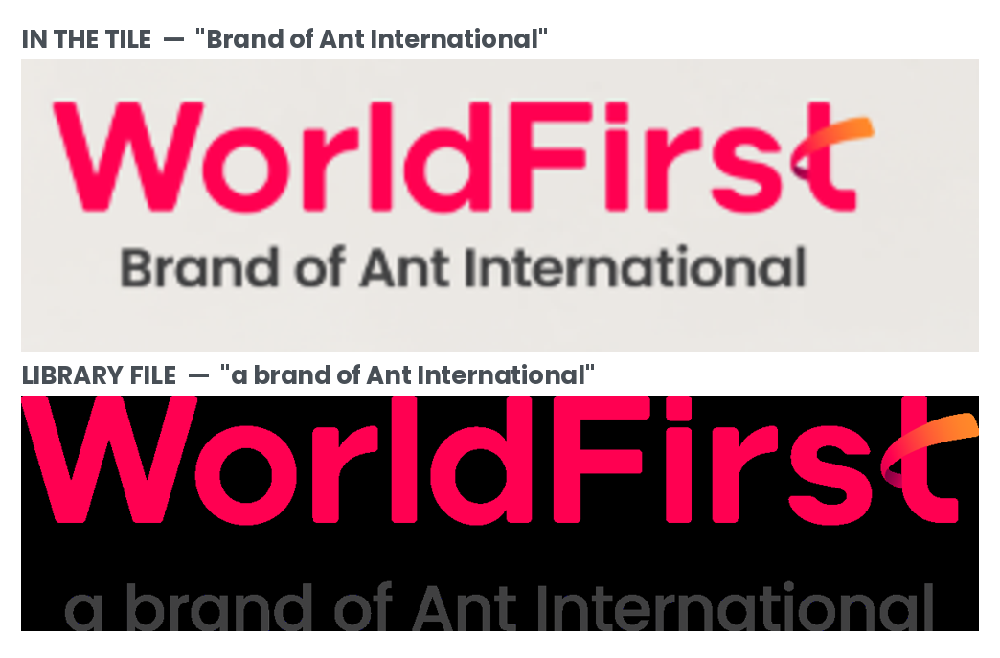
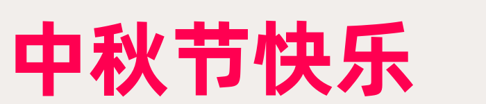
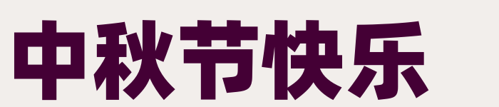
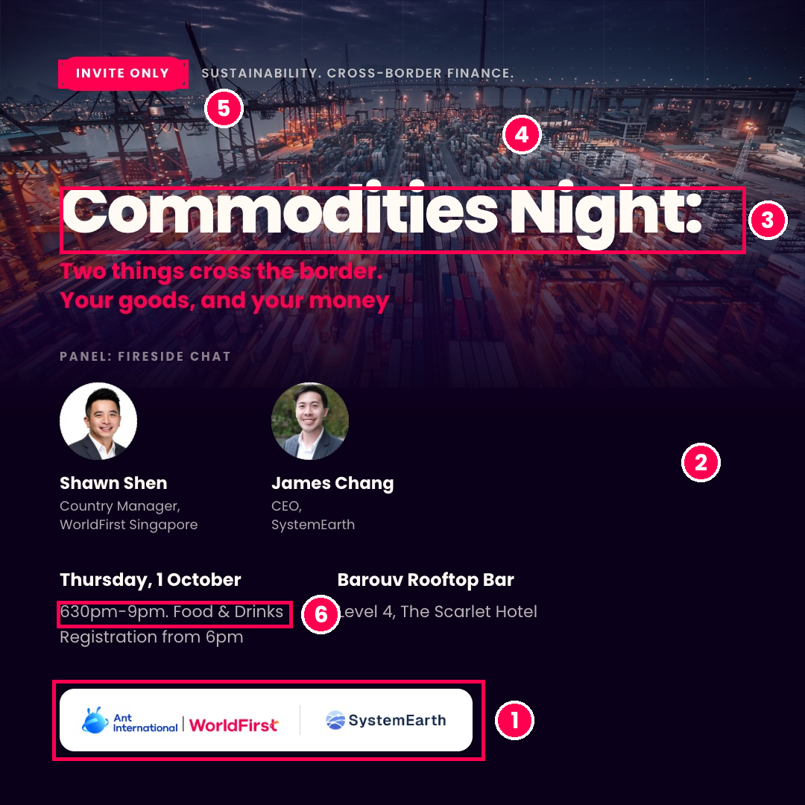
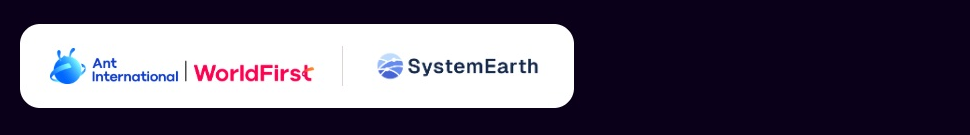
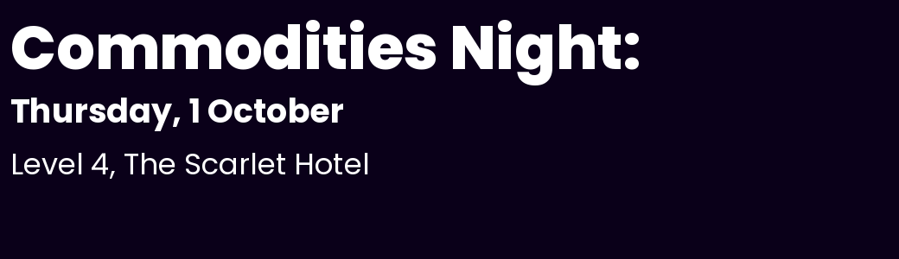
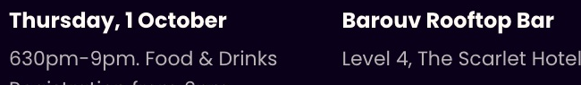

2 tiles · 16 September 2026 · rule set: WorldFirst · 6 blocks, 7 advisories

| # | Rule | Severity | What | Fix |
|---|---|---|---|---|
| 1 | ARC-01CPY-05 | BLOCK | Parent line typeset as “Brand of Ant International”. The library lockup reads “a brand of Ant International” — the lowercase “a” is missing and “Brand” is wrongly capitalised. The parent line may only appear through the lockup file, never retyped. | Drop in wf_lockup_brand-of-ant-international_en_pos.svg |
| 2 | COL-01 | BLOCK | Ground is warm cream #E6E3DF–#EAE6E2. Not a token. WF Light Grey is #ECEDEE, a neutral. BRAND.md §3 states plainly: no cream. |
Set #ECEDEE, or the Light Grey run #FFFFFF→#ECEDEE |
| 3 | COL-01COL-04 | BLOCK | CN headline is a gradient from #D7004B to #440035. Neither endpoint is in the palette. It also runs left→right; the four defined runs all go top-left→bottom-right, and text gradients are reserved for a single belt-less accent word. |
Set solid WF Red #FF0051 |
| 4 | GFX-01 | ADVISE | The 祥云 cloud scrolls, the blossom sprig and the divider florets are not library graphics. The brand graphics set is the dot map and the globe. | Remove, or submit via /brand_kit ingest for BEC sign-off |
| 5 | PHO-06 | ADVISE | WF Red covers 0.07% of pixels — threshold is 0.5%. The only red on the surface is the logo itself, so the key visual carries no red cue of its own. | Bring a red cue into the composition |
Same wordmark, different sub-line. The library file carries the article; the tile drops it and capitalises the noun.

My first read was that the Chinese looked too heavy. Measurement says otherwise, so the type is clean and only the colour is at fault. Glyph aspect ratios match the Bold master across all five characters (中 0.87/0.87 · 秋 1.01/1.03 · 节 0.99/0.99 · 快 1.03/1.04 · 乐 1.00/1.00) and ink density lands at 0.42–0.51 against Bold 0.47–0.52 and Heavy 0.57–0.62.
The tile — off-palette gradient
PuHuiTi Bold 700 — matches

PuHuiTi Heavy — ruled out

TYP-01 TYP-03 — CN is Alibaba PuHuiTi Bold 700, verified by glyph metrics above. EN is Poppins ExtraBold.COL-01 — EN headline is #13002D, exact WF Dark Purple.LOG-02 LOG-04 — positive variant on a light ground; wordmark aspect within 0.9% of the master (tolerance 2%); belt intact, no effects.LOG-06 — clear space 115 px left and 98 px top against a 33 px cap-W.CPY-02 CPY-04 — no em-dash, no exclamation marks.PHO-01/03/04/05 don’t apply — it’s a still life with no people. Worth flagging that the key visual carries no business-in-action or human-connection cue at all, which is the spirit of those principles.

| # | Rule | Severity | What | Fix |
|---|---|---|---|---|
| 1 | PRT-01 | BLOCK | The partnership lockup is built backwards. WorldFirst sits left and the partner right; the rule is partner left, WorldFirst right. The separator is a grey divider bar where the construction calls for a “+”. The divider bar belongs to the multi-partner variant only. | Rebuild from the 06_partnership-lockup template: SystemEarth left, “+”, WF brandmark right, matched heights |
| 2 | COL-01 | BLOCK | Ground is #0A0019. WF Dark Purple is #13002D — a near-miss carried across the entire surface. |
Set #13002D |
| 3 | COL-01 | BLOCK | Headline is set in #FFFAF4, a cream-tinted white rather than #FFFFFF. Cream is out. |
Set #FFFFFF |
| 4 | PHO-02 | ADVISE | Mean saturation 0.69, luminance spread 63. The port photo is pushed magenta and reads oversaturated against the warm-natural-light principle. | Pull saturation and the magenta cast back |
| 5 | GFX-03 | ADVISE | On a dark ground the pairing calls for white main text and a white supporting pill. The “INVITE ONLY” pill is WF Red, which is the light-grey-ground pairing. | Judge call — keep it. It’s the strongest red cue on the surface; take the advisory |
| 6 | CPY-06 | ADVISE | “630pm-9pm” isn’t British formatting. Separately, “Your goods, and your money” drops its full stop while the line above it keeps one. | “6.30pm–9pm”; add the missing full stop |
As built: WorldFirst left, divider bar, partner right. Required: partner left, “+”, WorldFirst right, both marks at a matched maximum height.

I initially suspected a foreign typeface here. Rendering the library Poppins files at matching sizes settles it — letterforms, the “1” flag, the “y” descender and the “S” terminals all match. TYP-01 passes.
Poppins from the library — reference

The tile — same forms

TYP-01 — Poppins ExtraBold / Bold / Regular, confirmed against the library files.COL-02 — WF Red present at 0.63% of pixels.COL-03 — Ant blue #1677FF stays inside the co-brand lockup, its only permitted context.LOG-02 — positive co-brand variant correctly seated on a white pill.CPY-02 CPY-03 CPY-04 — no em-dash, no avoid-list words, no exclamation marks./bec on the source files and the logo-provenance and type-scale checks move from judgement to automatic.